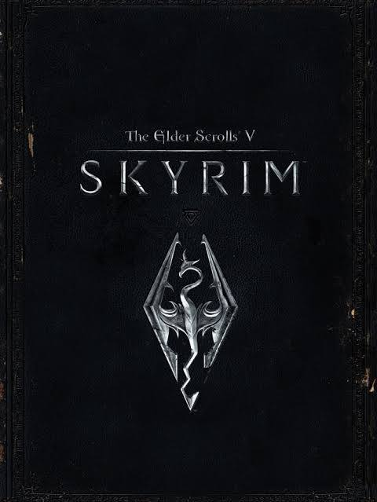

My Favorite Video Games

Elden Ring Elden Ring is a 2022 action role-playing game developed by FromSoftware. It was directed by Hidetaka Miyazaki with worldbuilding provided by fantasy writer George R. R. Martin. It was released for PlayStation 4, PlayStation 5, Windows, Xbox One, and Xbox Series X/S on February 25 by FromSoftware in Japan and Bandai Namco Entertainment internationally. Players control a customizable player character who is on a quest to repair the Elden Ring and become the new Elden Lord. Elden Ring is presented through a third-person perspective; players freely roam its interactive open world. The six main areas are traversed using the player character's steed Torrent as the primary mode of travel. Linear, hidden dungeons can be explored to find useful items. Players can use several types of weapons and magic spells, including non-direct engagement enabled by stealth mechanics. Throughout the game's world, checkpoints enable fast travel and allow players to improve their attributes using an in-game currency called Runes. Elden Ring has an online multiplayer mode in which players can join each other for cooperative play and player-versus-player combat.

Silent HillSilent Hill[b] is a 1999 survival horror game developed by Team Silent, a group in Konami Computer Entertainment Tokyo and published by Konami. The first installment in the video game series Silent Hill, the game was released from February to August, originally for the PlayStation. Silent Hill uses a third-person view, with real-time rendering of 3D environments. To mitigate limitations of the console hardware, developers used fog and darkness to muddle the graphics. Unlike earlier survival horror games that focused on protagonists with combat training, the player character of Silent Hill is an "everyman". The game follows Harry Mason as he searches for his missing adopted daughter in the eponymous fictional American town of Silent Hill; stumbling upon a cult conducting a ritual to revive a deity it worships, he discovers her true origin. Five game endings are possible, depending on actions taken by the player, including one joke ending.
Other Games I enjoy!
Skyrim
Dark Souls 3

Sekiro